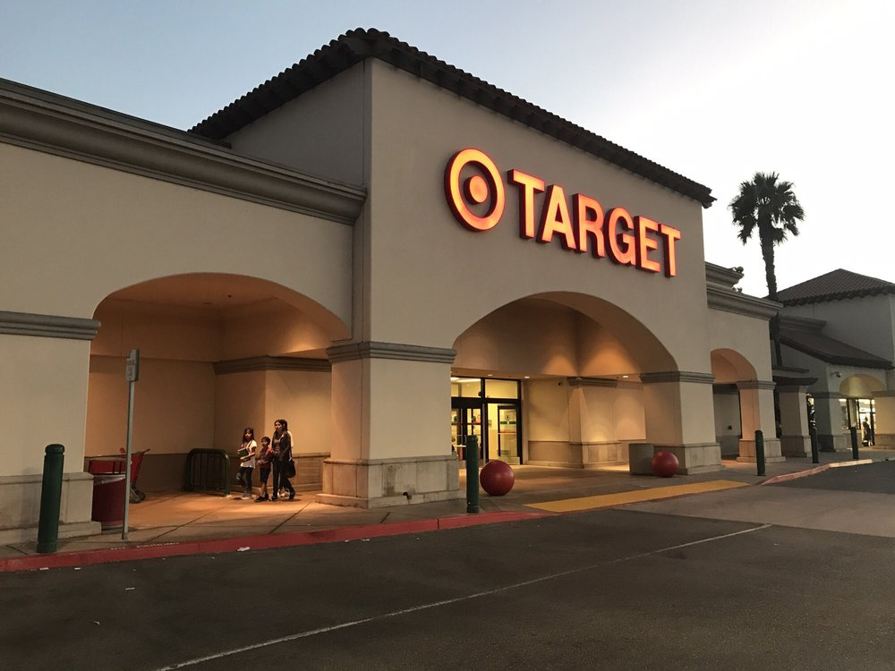
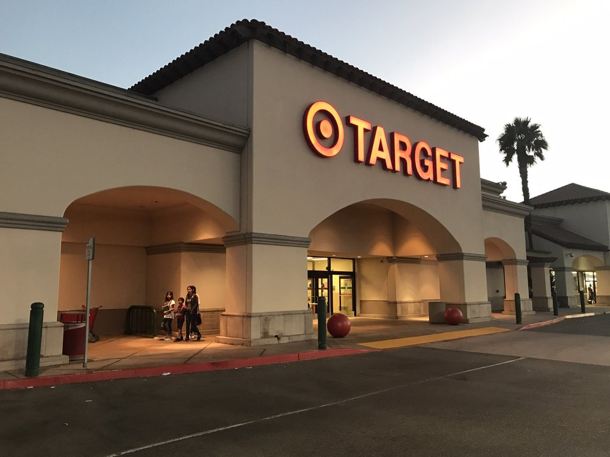
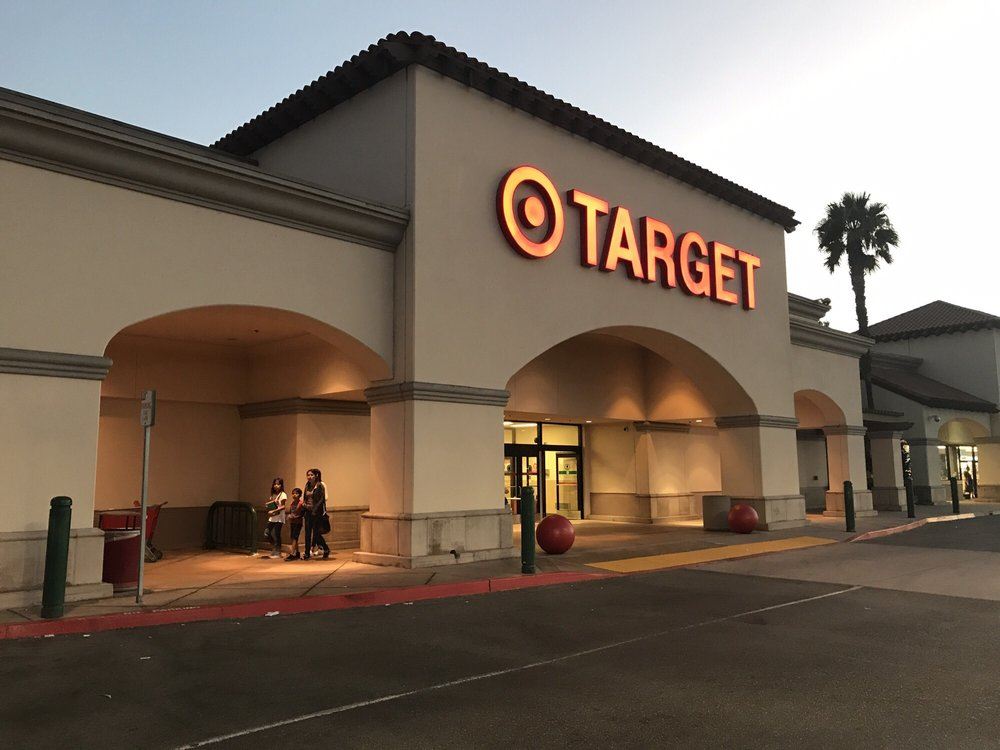

Stefan Anderson
Hello! My name is Stefan Anderson. I was born in the city of Camarillo, California. I went to Adolfo Camarillo High School and had learned many things there that now benefit me today. One of the things I learned there was how it is to help organize the funds in an organization and put together fundraisers to help raise money. I have played an active role in my school’s branch of the Junior Statesmen of America. As treasurer, I take care of arranging all the necessary forms and ensuring club-wide compliance with payment so that everyone can enjoy the regular conventions put on by the organization. At these conventions, people talk, debate, and socialize. They learn more about themselves and others, for a whole weekend. Further, my leadership position dictates that I spread word of the club and promote it as it is: a place to learn and debate political issues. I have acted as a moderator and have participated in debates myself. Most importantly though, I help iron out disagreements before they became major, and do my best to ensure that everyone has the opportunity to express themselves in a respectful environment. These past few years have been especially contentious. Peers of mine come from all different backgrounds. Some support Donald Trump’s policies, while others feel that those policies directly impact them, for example if they were born to immigrant parents. In my capacity as a leader of our branch, I remind everyone that political disagreements do not have to become personal disagreements, and that our political stances do not define who we are as individuals.
I’ve always loved building things. My addiction started with watching a true classic, “Bob the Builder.” I’d stomp around with a hard hat on, recruiting my older brother to pick up the sticks and materials that were just a little too big for me to handle. This morphed into an interest in how everything was constructed, whether that meant computers, buildings, or molecules. As I grew older, I noticed that every avenue of construction, whether it be the work of a chemical engineer, or that of my uncle working with shotcrete concrete, requires a strong background in math. This idea crystallized when I spent a summer at my uncle’s up north, pumping concrete. Any miscalculation in amount poured, water used, or hard material required meant big dollars down the drain. Plus, the appropriate quantity of rebar was absolutely necessary for a safe and strong structure. And it goes without saying that in any business, workers have to be paid and mistakes here meant plenty of headaches (according to my Aunt, but she always paid me correctly). Each of these experiences has solidified my belief in the importance of mathematics, and I know that whichever profession I choose, I will be able to put my skills to use.
For the past two years, I have taken care of my grandpa or as we call him, Dido. He suffers from Alzheimer's disease, a terrifying sickness that causes you to lose sight of all those around you ― even your loved ones. Watching him struggle with everyday tasks is heartbreaking, and it has been especially hard as his personality changes. He was always the king of terrible puns, but they just don’t come out anymore. He doesn’t ask me how I’m doing with the “chickadees.” He doesn’t call me emperor Stefanich anymore. He can no longer smack me down on the tennis court. But he is still there for me, and he still tells me how he loves me, every day. The least I can do is be there for him. But between juggling sports and taking care of my grandfather, my grades had nowhere to go but down. I decided to cut down on my social life. I’ve been lucky enough to have friends that understand and who find ways to see me no matter my schedule. I’m even luckier to have a family that encourages the same. With this support, I’ve been able to preserve my grades and spend as much time as possible with a man that I love before I lose the opportunity.
Experience
Custodial/Financial Mangager
• Doing janitorial duties around the office
• CHeacking people in at the front desk
• Working with Quicken to keep track of expenses and income
Treasurer
• Collecting and filling out money forms for Conventions and Fundraisers
• Setting up fundraisers to get money for conventions
Education
University of California Riverside
Portfolio
 



